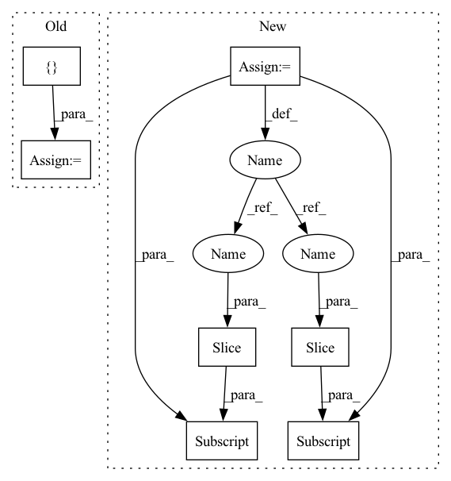

Pattern ID :35938
Before Change
for data_point in range(self.num_data_points):
datum, label = self.dataloader.dataset[pointer]
data += [datum]
labels += [ torch.as_tensor(label)After Change
buffer.copy_(server_state.to(**self.setup))
optimizer = torch.optim.SGD(self.model.parameters(), lr=self.local_learning_rate)
seen_data_idx = 0
for step in range(self.num_local_updates):
data = user_data[seen_data_idx: seen_data_idx + self.num_data_per_local_update_step]
labels = user_labels[seen_data_idx: seen_data_idx + self.num_data_per_local_update_step]
seen_data_idx += self.num_data_per_local_update_step
seen_data_idx = seen_data_idx % self.num_data_points
optimizer.zero_grad()In pattern: SUPERPATTERN
Frequency: 3
Non-data size: 7
Instances Fragment ID: 102230935
Project Name: jonasgeiping/breaching
Commit Name: 1ab2867fea20551797c9aea8ae67099093ec7180
Time: 2021-10-01
Author: jonas.geiping@googlemail.com
File Name: breaching/cases/users.py
M Class Name: UserMultiStep
N Class Name: UserMultiStep
M Method Name: compute_local_updates(2)
N Method Name: compute_local_updates(2)
M Parent Class: UserSingleStep
N Parent Class: UserSingleStep
M File Name: breaching/cases/users.py
N File Name: breaching/cases/users.py
M Start Line: 151
M End Line: 187
N Start Line: 158
N End Line: 200
Before Change
self.X, self.Y = [], []
self.received_ids = []
self.received_models = []
self.received_weights = []
self.weight_vector = torch.zeros(self.total_clients, device=self.device)
self.loss = nn.CrossEntropyLoss()
self.optimizer = torch.optim.SGD(self.model.parameters(), lr=self.learning_rate)After Change
self.optimizer = torch.optim.SGD(self.model.parameters(), lr=self.learning_rate)
self.val_ratio = 0.2
val_idx = -int(self.val_ratio*len(train_data))
val_data = train_data[val_idx:]
train_data = train_data[:val_idx]
self.train_samples = len(train_data)
self.trainloader = DataLoader(train_data, self.batch_size, drop_last=True)
self.trainloaderfull = DataLoader(train_data, self.batch_size, drop_last=False) Fragment ID: 102230823
Project Name: tsingz0/pfl-non-iid
Commit Name: 9f3dd6c4ac5b7e8a15d07ef015eb8fd4f90beab3
Time: 2021-08-29
Author: 2719584131@qq.com
File Name: system/flcore/clients/clientfomo.py
M Class Name: clientFomo
N Class Name: clientFomo
M Method Name: __init__(12)
N Method Name: __init__(12)
M Parent Class: Client
N Parent Class: client
M File Name: system/flcore/clients/clientfomo.py
N File Name: system/flcore/clients/clientfomo.py
M Start Line: 17
M End Line: 20
N Start Line: 25
N End Line: 35
Before Change
// Select data
data = []
labels = []
pointer = self.data_idx
for data_point in range(self.num_data_points):
datum, label = self.dataloader.dataset[pointer]
data += [datum]
labels += [torch.as_tensor(label)]
pointer += server_payload["data"].classes
pointer = pointer % len(self.dataloader.dataset)
data = torch.stack(data).to(**self.setup)
labels = torch.stack(labels).to(device=self.setup["device"])
// Compute local updates
shared_grads = []
shared_buffers = []
for query in range(self.num_user_queries):
payload = server_payload["queries"][query]
parameters = payload["parameters"]
buffers = payload["buffers"]
with torch.no_grad():
for param, server_state in zip(self.model.parameters(), parameters):
param.copy_(server_state.to(**self.setup))
for buffer, server_state in zip(self.model.buffers(), buffers):
buffer.copy_(server_state.to(**self.setup))
// Compute the forward pass
outputs = self.model(data)
loss = self.loss(outputs, labels)
shared_grads += [torch.autograd.grad(loss, self.model.parameters())]
shared_buffers += [[b.clone().detach() for b in self.model.buffers()]]
shared_data = dict(gradients=shared_grads, buffers=shared_buffers,After Change
buffer.copy_(server_state.to(**self.setup))
optimizer = torch.optim.SGD(self.model.parameters(), lr=self.local_learning_rate)
seen_data_idx = 0
for step in range(self.num_local_updates):
data = user_data[seen_data_idx: seen_data_idx + self.num_data_per_local_update_step]
labels = user_labels[seen_data_idx: seen_data_idx + self.num_data_per_local_update_step]
seen_data_idx += self.num_data_per_local_update_step
seen_data_idx = seen_data_idx % self.num_data_points
optimizer.zero_grad() Fragment ID: 102230870
Project Name: jonasgeiping/breaching
Commit Name: 1ab2867fea20551797c9aea8ae67099093ec7180
Time: 2021-10-01
Author: jonas.geiping@googlemail.com
File Name: breaching/cases/users.py
M Class Name: UserMultiStep
N Class Name: UserMultiStep
M Method Name: compute_local_updates(2)
N Method Name: compute_local_updates(2)
M Parent Class: UserSingleStep
N Parent Class: UserSingleStep
M File Name: breaching/cases/users.py
N File Name: breaching/cases/users.py
M Start Line: 151
M End Line: 187
N Start Line: 158
N End Line: 200
Before Change
def decode_token(self, token_id: int) -> str:
Hack to hopefully support generate_stream for the maximum number of tokenizers
// append token to special decode token and decode both
result = self.tokenizer.decode(
[ self.special_decode_token_id, token_idAfter Change
)
if token_offset is None:
token_offset = len(all_input_ids) - 3
// Decode token_offset token minus last one and token_offset tokens
results = self.tokenizer.batch_decode(
[all_input_ids[token_offset:-1] , all_input_ids[token_offset:] ],
skip_special_tokens=False,
)
Fragment ID: 102230815
Project Name: huggingface/text-generation-inference
Commit Name: 299217c95ca314e8dbbeca26ce8cdceb440ec53b
Time: 2023-04-11
Author: olivier@huggingface.co
File Name: server/text_generation_server/models/model.py
M Class Name: Model
N Class Name: Model
M Method Name: decode_token(4)
N Method Name: decode_token(2)
M Parent Class: ABC
N Parent Class: ABC
M File Name: server/text_generation_server/models/model.py
N File Name: server/text_generation_server/models/model.py
M Start Line: 36
M End Line: 43
N Start Line: 28
N End Line: 61